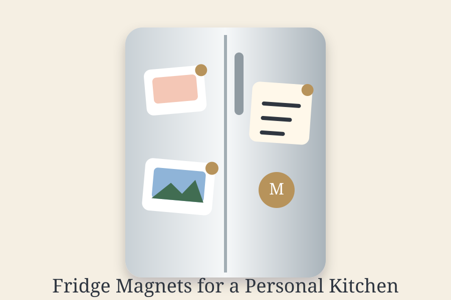

The kitchen refrigerator has evolved far beyond its primary function of food preservation. Today, it stands as a centerpiece of home organization, a bulletin board for family announcements, and most importantly, a gallery wall for memories and artistic expression. Premium fridge magnets have become an essential component of modern home decor, offering the perfect blend of practicality and aesthetic appeal. Whether you are displaying family photos, reminding yourself of important dates, or simply adding visual interest to your kitchen, high-quality fridge magnets provide an elegant solution that transforms your refrigerator into a personalized showcase.

The Evolution of Refrigerator Decoration
Gone are the days when fridge magnets were purely utilitarian, simple plastic holders for takeout menus and grocery lists. Modern premium fridge magnets represent a significant aesthetic upgrade, designed by professionals who understand both kitchen design trends and functionality requirements. Today's fridge magnets come in diverse styles, materials, and designs that can complement any kitchen aesthetic, from minimalist contemporary to cozy farmhouse.
The transformation of fridge magnets into decorative elements reflects a broader cultural shift toward personalizing living spaces. People increasingly recognize that their kitchen, often called the heart of the home, deserves thoughtful decoration. Premium magnets fill this need perfectly, serving as affordable, flexible alternatives to traditional kitchen artwork while maintaining practical utility.
Functionality Meets Aesthetics in Kitchen Design
The fundamental appeal of premium fridge magnets lies in their unique ability to serve dual purposes. Unlike traditional kitchen decor that exists purely for visual appeal, fridge magnets actively hold important items, such as photos, notes, children's artwork, appointment reminders, and shopping lists. This functional dimension makes them invaluable in busy households where organization and visual inspiration coexist.
High-quality fridge magnets maintain powerful magnetic strength that reliably holds various materials without slipping or falling, a critical feature that cheaper alternatives often lack. Premium products are engineered to withstand the weight of multiple paper items, photographs, and even lightweight metal objects, ensuring your carefully arranged kitchen display remains intact throughout the day. If you want more tailored displays, consider custom photo magnets.
Material Quality That Defines Premium Magnets
The distinction between standard and premium fridge magnets becomes immediately apparent when examining material composition. Premium magnets utilize industrial-strength rare-earth magnets that maintain consistent holding power over years of use, unlike standard ferrite magnets that gradually lose magnetism. The backing materials are carefully selected to resist corrosion, prevent surface damage to your refrigerator, and ensure longevity.
Superior fridge magnets often feature protective layers that prevent scratching or sticking to refrigerator surfaces. Materials like soft rubber or felt backing protect both the magnet and your appliance's finish. The front surfaces are typically made from durable materials like ceramic, wood, acrylic, or high-quality plastic that resist fading, cracking, and wear from daily handling and environmental exposure.
Design Variety That Complements Any Kitchen
Modern kitchen design spans numerous styles, and premium fridge magnets have evolved to offer options for each aesthetic preference. Minimalist kitchens benefit from sleek metal magnets or simple geometric designs in neutral colors. Farmhouse-style kitchens showcase charming vintage-inspired magnets with warm, rustic finishes. Eclectic kitchens can display vibrant, artistic magnets that make bold design statements.
Custom photo magnets represent the pinnacle of personalized kitchen decoration. Showcase family photos, vacation memories, or artwork with magnets that transform your refrigerator into an ever-changing gallery. Custom magnets allow you to control every design element, from the photographs displayed to text overlays and decorative borders. This level of customization ensures your fridge magnets perfectly reflect your personality and home style. You can also match them with our photo magnets for a unified aesthetic.
Organizing While Decorating Your Kitchen
The psychological benefit of an organized, beautiful kitchen cannot be overstated. Premium fridge magnets enable you to organize important information while simultaneously creating an attractive display. Color-coded magnets can categorize different types of items, perhaps red for urgent reminders, green for meal planning, blue for family photos. This visual organization system makes daily life more efficient while creating an aesthetically pleasing result.
Family calendars, meal planning sheets, and important contact information can be displayed on attractive magnets that encourage regular viewing and reference. Unlike information stored digitally or tucked away in drawers, fridge-mounted information remains visible and accessible. Studies show that visible reminders and organizational aids increase follow-through on planning and task completion.
The Gift-Giving Appeal of Premium Magnets
Premium fridge magnets have become increasingly popular as thoughtful gifts for several compelling reasons. They are practical items that recipients will genuinely use, more economical than larger kitchen appliances or furniture, and deeply personal when featuring custom designs or meaningful photographs. A set of custom photo magnets featuring family memories becomes a cherished gift that recipients display proudly in their most-viewed room.
Housewarming parties, hostess gifts, and congratulations presents all benefit from premium magnet sets. New homeowners appreciate magnets that help them settle into and organize their new kitchen. Grandparents treasure magnets featuring grandchildren photos. Friends separated by distance appreciate magnets featuring shared memories. The versatility and personal touch of premium magnets make them ideal gifts across numerous occasions and relationships.
Sustainability and Eco-Conscious Choices
Environmentally conscious consumers increasingly seek decorative solutions that align with their values. Premium fridge magnets from responsible manufacturers often utilize sustainable materials, eco-friendly printing methods, and responsible sourcing practices. Many premium brands have committed to reducing plastic waste by using recycled materials, minimizing packaging, and offering durable products that last for years rather than becoming disposable.
Investing in high-quality, durable magnets that maintain their appearance and function for years represents a more sustainable choice than repeatedly replacing cheap, short-lived alternatives. This longevity reduces overall consumption and waste, making premium magnets a responsible choice for environmentally conscious households.
Creating Inspiring and Personal Kitchen Spaces
Your kitchen environment influences daily mood and family interactions. A thoughtfully decorated refrigerator filled with meaningful photos, inspiring quotes, and beautiful magnets creates a positive, personal space that family members enjoy spending time in. Children benefit from seeing themselves and their accomplishments displayed prominently. Adults find motivation in visible reminders of goals and cherished memories.
Premium fridge magnets allow you to curate your kitchen's visual environment with intention and taste. Rather than accepting whatever bare refrigerator surface comes with your appliance, premium magnets transform it into a personalized expression of your values, interests, and relationships. This transformation costs far less than kitchen renovations but significantly impacts your daily experience in this central room.
Maintenance and Longevity of Quality Magnets
Premium fridge magnets require minimal maintenance while offering extended longevity. Simple occasional wiping with a dry cloth removes dust and fingerprints while preserving the magnet's appearance. The durable materials used in quality magnets resist fading, scratching, and deterioration from regular use. When cared for properly, premium magnets maintain their appearance and function for many years, providing lasting value for your investment.
Conclusion
Premium fridge magnets represent an affordable, practical, and aesthetically satisfying solution for kitchen organization and decoration. By combining functional utility with beautiful design, quality magnets transform your refrigerator from a simple appliance into a personalized display that reflects your unique style and priorities. Whether you choose custom photo magnets, artisan-designed pieces, or carefully curated collections, investing in premium fridge magnets enhances both the function and beauty of your kitchen. Start creating your perfect refrigerator display today with magnets that truly make a difference.
Discover Premium Fridge Magnets
Browse our collection of beautiful, high-quality magnets for your kitchen.
Shop Fridge Magnets